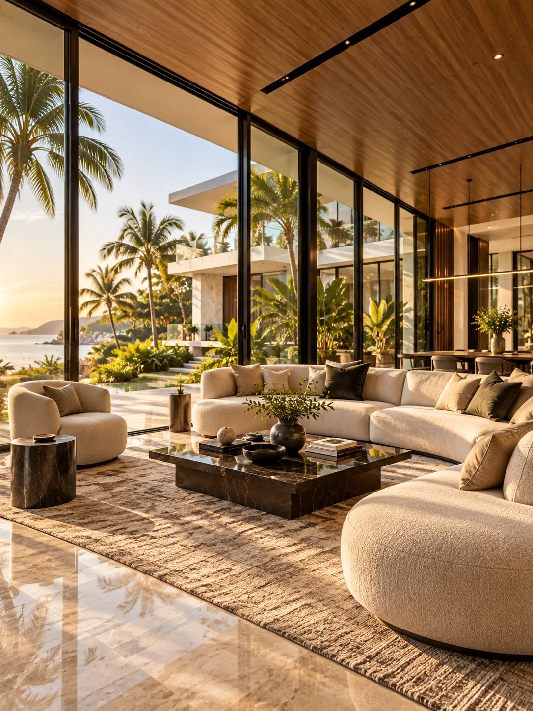
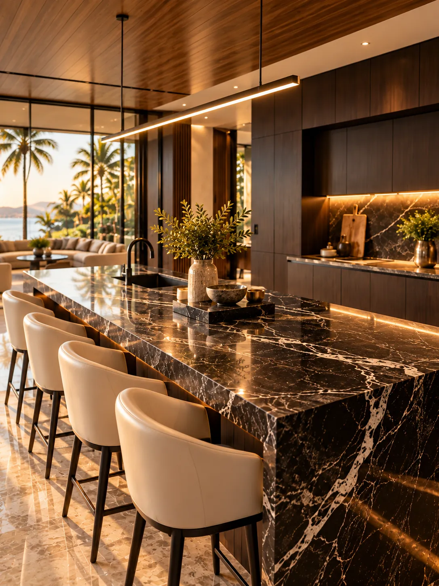
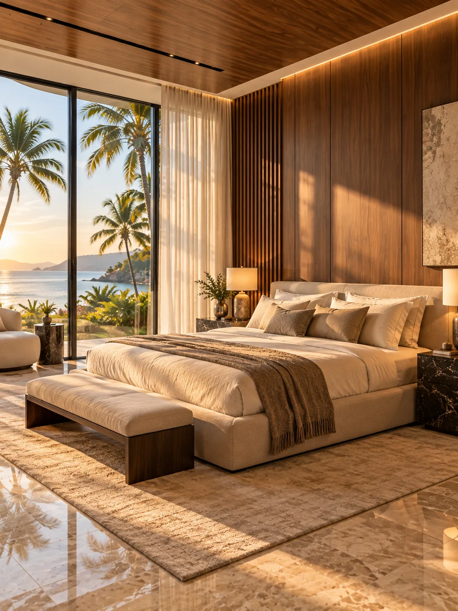
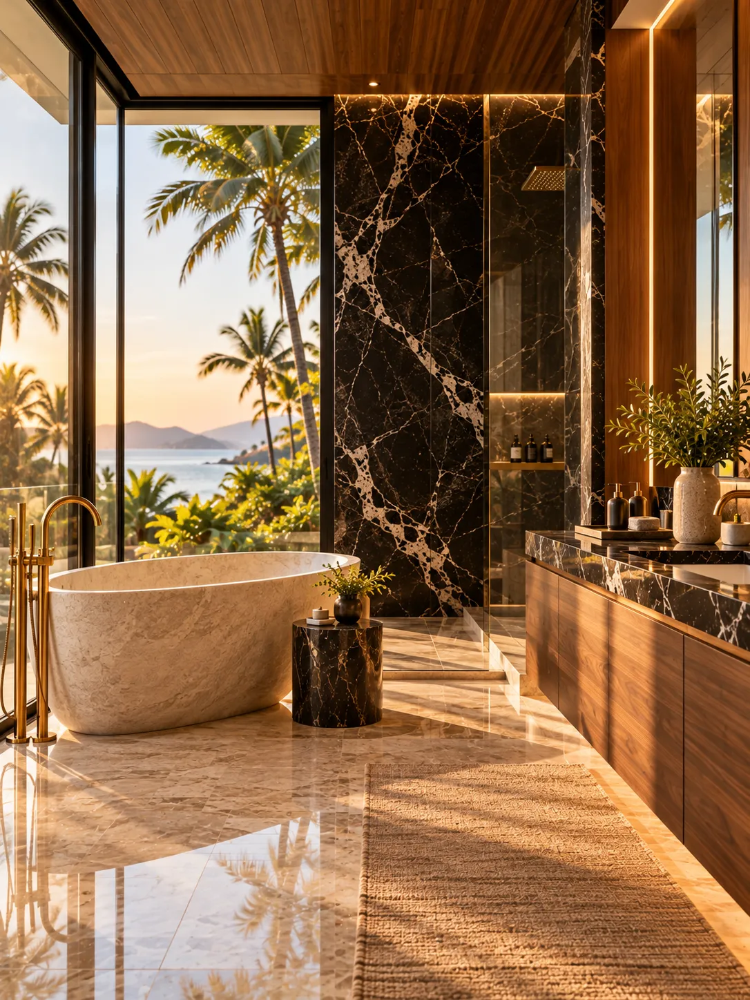
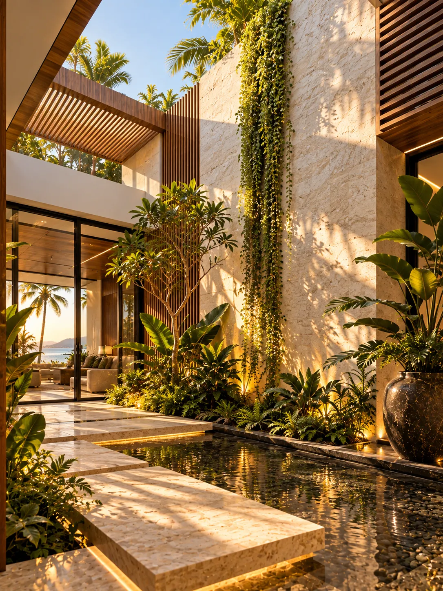
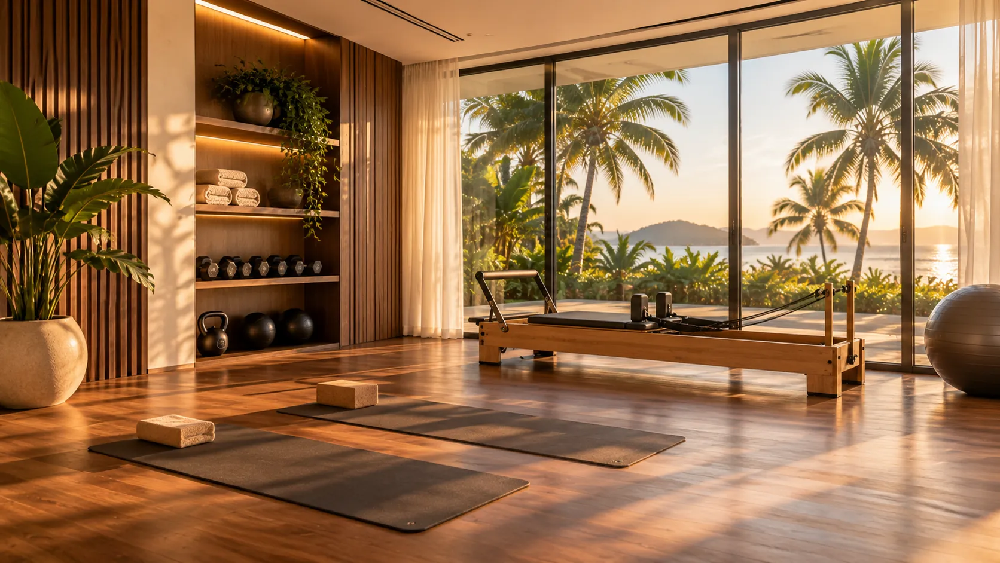
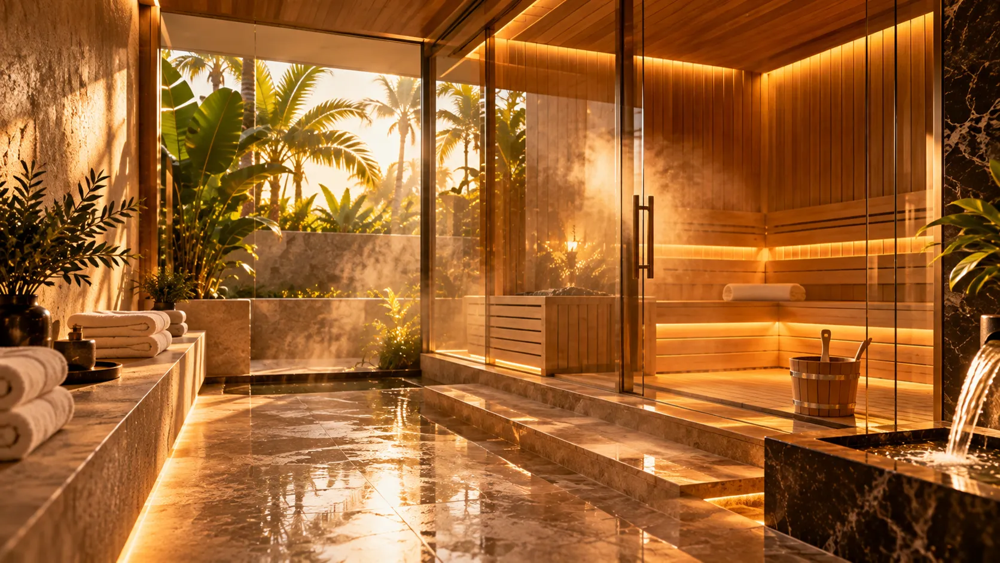
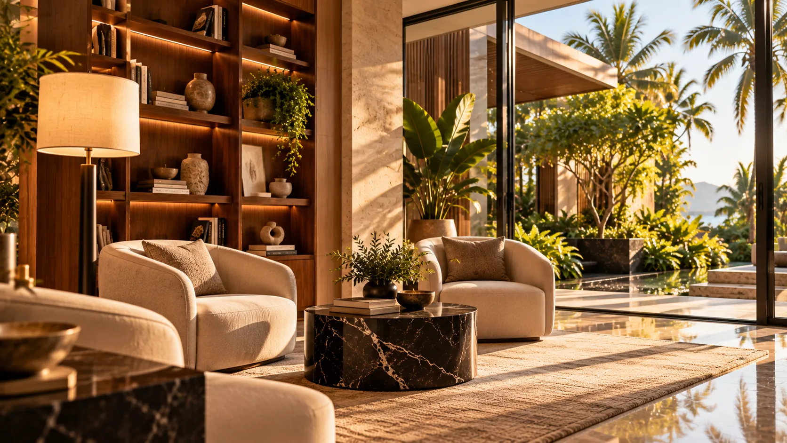

Aaroh Residences
Step into a quieter life.




The amenities
The amenities
Five ways to spend a day.




Garden atrium
A quiet courtyard, open to the sky.
Wellness studio
Space to move, stretch, and reset.
Spa and sauna
Warmth and stillness, steps from home.
Residents’ lounge
A room built for slow afternoons.
Sky pool
The horizon, held at the edge of the water.
The residences
Room to breathe, by design.
Each residence is planned around proportion and quiet — generous rooms, considered light, and space left unhurried on purpose.
Wellness studio
Move with ease.
Spa and sauna
Time to unwind.
Residents’ lounge
Stay a little longer.
Let the water do the rest.
Less noise. More Aaroh.
The neighbourhood